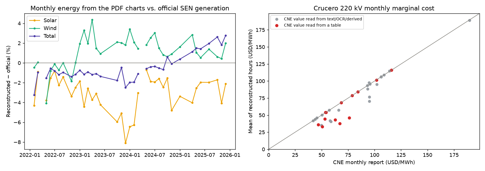
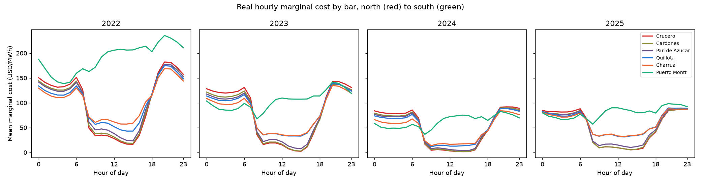
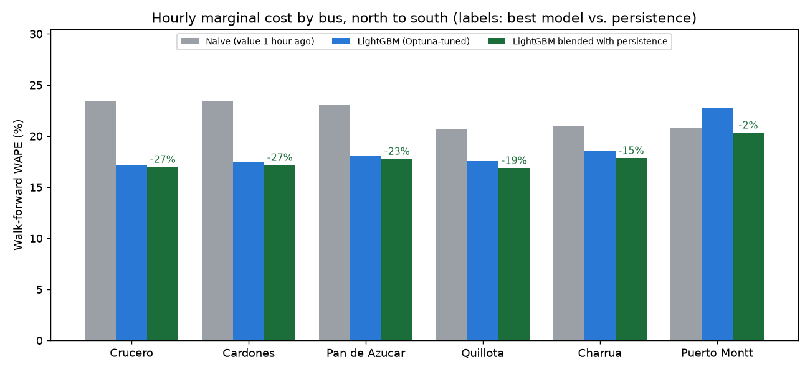
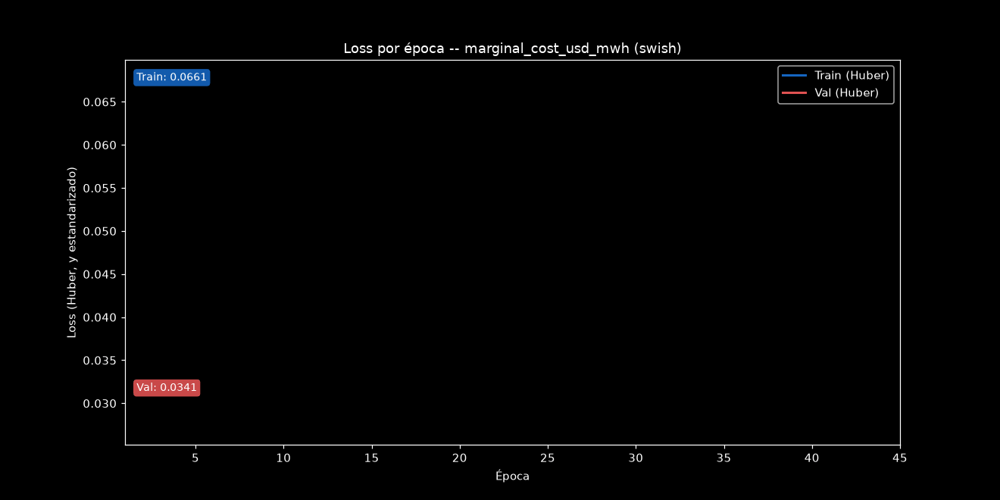
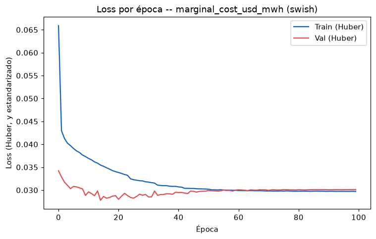

Hourly forecasting of Chile's National Electric System (SEN) on four years of real hourly data (2022-2025): marginal cost at 6 real 220 kV buses from Antofagasta to Puerto Montt, and system-wide solar generation, wind generation and demand. The hourly series are not downloaded from an API (the grid coordinator's requires an institutional account): they are read out of the vector charts in the coordinator's public daily PDF reports, calibrated day by day against the numbers each report prints, and validated against two independent official monthly series. On top of that: LightGBM tuned with Optuna and validated walk-forward against naive baselines, real weather features (ERA5), Rolling-Origin CV against XGBoost, a PyTorch MLP, conformal prediction intervals, a recursive multi-step forecaster and a Streamlit dashboard.
This page shows the project's results. The methodology, the design decisions and the limitations are documented in the repository's README.


notebooks/01_eda_seasonality_analysis.ipynb): one system-wide driver does not price a bus that transmission isolates.
Adding information did not help: system hydro and thermal generation, the other buses' prices and one model per bus all made the price forecast slightly worse. Reacting less did. Blending the model with the price one hour earlier, with one weight per bus chosen inside each training fold and never on the test, lowers price WAPE from 18.71% to 17.88% and improves every bus. The weights follow the geography: about 0.9 in the north and 0.25 at Puerto Montt, which goes from losing to persistence (22.75% vs. 20.82%) to beating it (20.34%).
A dense MLP with a custom Huber loss, trained on the same folds and features as the tree models. On the old simulated panel it was the best model on price; on real prices every activation lands at 21.9-22.5% WAPE, above default LightGBM (19.75%) and level with persistence (21.88%). All 15 runs reach their best validation loss between epochs 5 and 27: the network starts overfitting real prices almost immediately.

